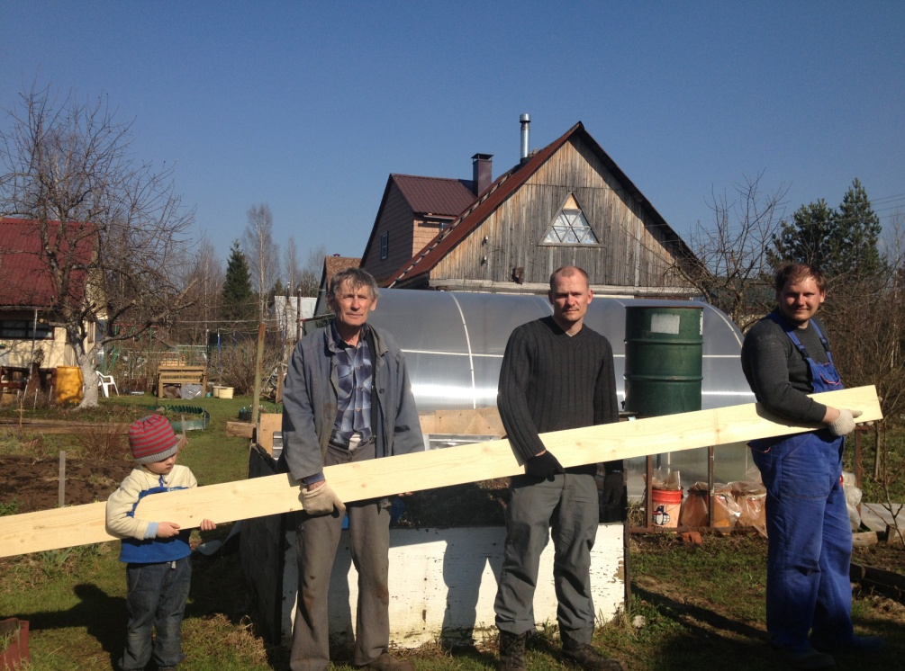
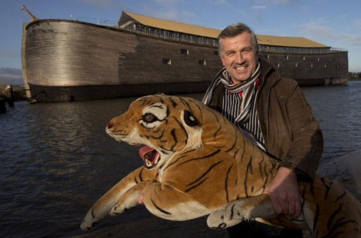

|
Тест на сообразительность
Сколько
яиц можно съесть натощак?
Одинокий
сторож умер днём. Дадут ли ему пенсию?
Пожарнику
на одевание штанов по тревоге дают 3 секунды. Сколько он наденет
штанов за 2 минуты?
В
саду росли кусты смородины, сирени, малины и крыжовника. Под каким
кустом сидел заяц в сырую погоду?
Профессор
ложится спать в 10 часов вечера, а будильник заводит на 11 часов
утра. Сколько часов он будет спать?
На
почте принимают предметы в посылках не длиннее 1 метра. Как можно
отправить предмет длиной в 1,4 метра?
Вы
– пилот самолёта, летящего в Хабаровск с тремя посадками в
Казани, Омске и Иркутске. Сколько лет пилоту?
Вы
ночью заходите в тёмную комнату, в которой есть свеча и керосиновая
лампа. Что вы зажжёте в первую очередь?
Один
поезд идёт из Киева в Москву, другой – ему навстречу. Вышли
они в одно время, но у киевского поезда скорость втрое выше. Какой
поезд будет дальше от Киева в момент их встречи?
Отец
с сыном попали в катастрофу. Отец скончался в госпитале. К сыну в
палату заходит хирург и говорит: « Это мой сын». Как
такое может быть?
Археологи
нашли монету, датированную 24 годом до н.э. Возможно ли это?
Сколько
нужно сделать распилов доски, если мы хоти получить 4 куска?

Один
дед сказал, что он старше некоторых родственников в 800 раз. Можно
ли ему верить?
Однажды
в бар зашёл ковбой и попросил стакан воды. Бармен быстро достал
винчестер и прицелился ему в лоб. Ковбой сказал спасибо и ушёл. Как
это можно объяснить?
Горело
8 свечей. Из них три погасли. Сколько осталось?
Когда
праведник попал в рай, то ему было обещано, что он там увидит много
близких ему людей. Так и случилось – но среди них он легко
узнал Адама и Еву. Каким образом?
Один
охотник пошёл на охоту. На юг он прошёл 3 км, потом повернул на
восток и прошёл ещё 3 км. Там он убил медведя и вернулся в исходный
пункт, пройдя 3 км на север. Какого цвета была добытая им медвежья
шкура?
Человек,
похитивший самолёт в воздухе, заставил пилотов сделать посадку. В
аэропорту он потребовал денежный выкуп, легкомоторный самолёт и два
парашюта. Поднявшись снова в воздух, он прыгнул с парашютом –
и его так и не нашли. Почему он потребовал 2 парашюта?
Пассажир,
выбросившийся из поезда, оставил в купе белую повязку. Попытайтесь
высказать версию того, что произошло.
Сколько
зверей посадил Ной на свой корабль?

Решения
Одно
яйцо.
Нет.
Штук
несколько – много не налезут.
Под
мокрым.
Один
час. Будильник время суток не различает.
Положить
его в коробку 1х1 метр по диагонали.
Столько,
сколько и вам.
Спички
или зажигалку.
Оба.
Если
его мать была хирургом.
Нет.
Это же нумерация людей из н.э.
3.
Если
этот родственник – новорожденный младенец.
У
ковбоя была икота, которая обычно проходит при сильном испуге.
Три
– а 5 сгорели дотла.
У
Адама и Евы не было пупков, так как их женщины не рожали.
Шкура
была белая, так как такой маршрут можно сделать только у Северного
полюса.
Если
бы он попросил 1 парашют, ему могли бы дать бракованный. Но полиция
поняла, что он второй берёт для заложника. Поэтому она могла выдать
только два исправных парашюта.
Одна
из версий состоит в том, что это был слепой. Который вылечился в
больнице, но боялся сразу снять повязку. Он сел в поезд – но
когда он решился снять повязку, то ничего не увидел, так как поезд
зашёл в туннель. С горя он покончил с собой. Ваша версия может быть
другой. Но она должна логически связать все события.
Каждой
твари по паре.
Резюме
Подсчитайте число неправильных
ответов.
0 – 1 гений
2 – 4 интеллектуал
5 – 8 нормальный человек
9 – 10 рядовой идиот
11 – 12 абсолютный идиот
13 – 15 не способен
мыслить
15 – 20 необходимо
изолировать от общества
|
|
- Персоналии
- История знаковых игр
- Наша игротека
- Головоломки, лингвистические игры
- Теория
- Прикладные аспекты
- Наши рецензии
- Журнал в журнале
- Другие статьи
|